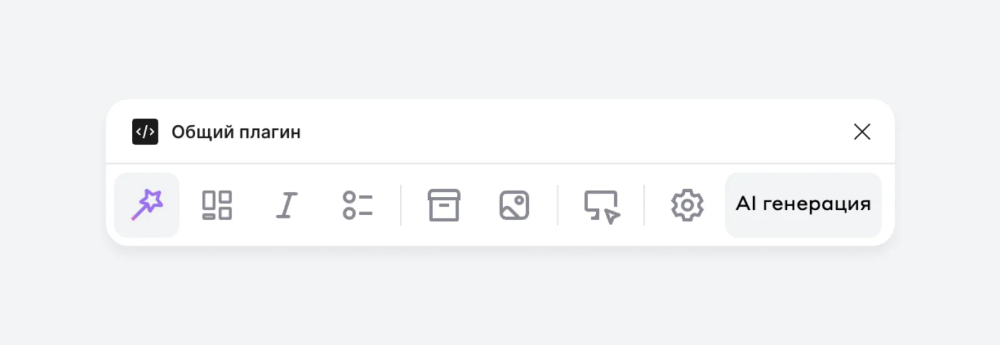

One designer, one plugin, every designer on the site
I designed and coded a Figma plugin that takes the most hated routine off the site's designers: an hour of assembling images turns into one click. Then I taught it to build pages with AI — from a knowledge base I designed so that the model makes decisions instead of guessing.

About

Russia's largest private bank. Its website is built by 30+ designers across product teams, on one design system and an in-house admin panel.
- Site MAU
- 22M+
- Visits a year
Problem
Every page on the site is assembled in the bank's own admin panel, and every image in it has to come out of Figma first. That means pulling image masters into widget slots, laying them out, linking them back, and keeping the naming right before export.
On a large layout that's 40 minutes to an hour of pure routine — the part of the job every designer hates most, me included.
The second pain is “fitting”: a layout with image masters and detailed instructions for marketing, who draw the illustrations and drop them into the sections. The instructions have to be very detailed, because marketing doesn't work much in Figma.
My role
Entirely my initiative — the ideas, the tasks and the solutions. I design the plugin and write its code myself; there's no team behind it.
It doesn't have a team's time either: I get about one day a week for it, and part of that often goes to business tasks. Before this I led the site's guidelines working group, describing and fixing the rules. Two months ago, with the leads' support, I started a vibe coding and AI track on the site, and I run it.
One plugin, independent services
Instead of another single-purpose plugin I build one panel that will replace the ones we use today and work as an extra layer on top of Figma. Every service inside is written independently: changing or breaking one can't touch its neighbours.
| Service | What it does | Status |
|---|---|---|
| Assembly | Exports, renames and lays out the images of a layout | In use |
| Fitting | The same, plus hints, sizes and comments for marketing | In use |
| Typographer | Fixes text to the bank's editorial policy in one click | In use |
| AI generation | Builds a page from a prompt using the knowledge base | Working, improving |
| Design checker | Finds mistakes in a layout and helps fix them | Planned |
| Design review | Compares production with the layout and finds mismatches | Planned |
Assembly and fitting
Select a frame or a component, choose Assembly or Fitting, press Run. Meanwhile the plugin:
- Detects whether it's a desktop or a mobile layout
- Finds every image in the selection, skipping hidden ones
- Creates a section named after the selected frame and puts the masters of all images inside, returning copies to where they came from
- Keeps the naming and semantics of image frames — the admin panel reads them as they are
- Orders images top to bottom, left to right, and keeps that order when they're exported
- For fitting, adds hints for marketing, image sizes and a field for the designer's comments
This is amazing — your plugin did in 3 seconds what I'd been sitting on for an hour.
Designer from another product team
Typographer
The bank's editorial policy is built into the plugin: quotes, dashes, non-breaking spaces, currency, numbers, phones, links and 39 rules for product names. Select a layer, a group or a whole frame — and the text follows the rules, without anyone checking it by hand.
| As typed | After the Typographer |
|---|---|
| 100 рублей | 100 ₽ — with a narrow non-breaking space |
| 10 - 20 | 10–20 — an en dash for ranges |
| 1000000 | 1 000 000 — digits grouped |
| "текст" | «текст» — Russian quotes |
| Альфа банк | Альфа-Банк — the official name |
The design decisions mattered more than the rules:
- Two modes. Check shows every fix before it's applied, highlighting the fragment itself rather than every special character; you can apply all, only typography, or one by one. Fix now applies everything and shows a summary
- Knowing what not to automate. Three rules depend on meaning — expanding “20 thousand”, the preposition in “100 ₽ / month”, masked card and phone numbers. The plugin finds them and leaves the decision to the editor in a separate block
- Formatting survives. Text is never rewritten as a whole: the plugin computes a minimal diff and fixes characters in place, so colours, weights, variables and links stay where they were
- Teams can extend it. Custom “as typed → as it should be” pairs are kept between runs; rules can depend on the component, like blog templates and accordions
AI page generation
The most ambitious part. It already builds a page from a prompt; there are mistakes, but not critical ones.
The principle behind it: the model should make decisions, not look for information.
So instead of letting AI invent an interface from scratch, I designed a knowledge base that works the way an experienced product designer thinks. It's split into layers, each answering one question, and the model opens only the documents the current task needs:
- Planning — what to build? Page types with their business goal and scenario, patterns of page structure, ready-made presets
- Registry — where is it? A short index of everything, read first, so the model knows which documents to open
- Knowledge — what to build it from? The design system's widgets, team widgets for acquiring, cards, credit and investments, components and forms
- Constraints — by which rules? Layout, spacing, accessibility, widget order, and the editorial policy: tone of voice, headlines, button texts, banned wording
- Reference — has this worked before? Real pages of the product, with the reasons behind their choices
The output is a build plan that the Figma builder turns into a page.
The base follows a few strict rules: every entity lives in one place only; new documents are created only from templates; entities have JSON schemas, so the base can later be validated automatically; common widgets come first, and team widgets are used only when a team is named explicitly. It isn't documentation — it's what the model uses to make design decisions.
Measuring a tool, not guessing
Before the plugin I built a native Figma widget for the team's layout info block: links and descriptions, the latest updates, the designers on a layout, and design checks in the right order, with the widget changing colour as checks pass. It replaced two fragile masters that kept needing support. More than 80 designers use it, including teams outside the site.
Then I measured it. I timed the same task in the old and the new version and scaled it up:
29 seconds a task × 30 designers × once a day is about 14 minutes a day, 1.2 hours a week — around 70 hours a year, counting support. A rough estimate, but it turns “it feels faster” into a number a team lead can plan with. The plugin got the same treatment below.
Rollout
Every designer on the site team — 30+ people — uses the plugin. I showed it at Alfa's monthly design meetup, with more than 300 designers online.
Sounds great, I'm going to try it!
Senior product designer
An absolute bomb.
Senior product designer
What it saves
A rough estimate, on the same method as the widget. One large layout first:
One assembly or fitting gives back about $12–18 of a designer's time.
Then the team. 10 to 30 layouts go through design check every week, most of them large pages full of images. I take only the lower end — 40 minutes per layout — and an average product designer salary in large Russian banks and tech of about ₽250K a month — roughly $3,000, or $19 an hour at ~₽83 per dollar:
These are approximate numbers: real layouts vary, and banners save less than pages. The next step is to time real layouts and narrow the range — but even the lower bound is worth the one day a week it took to build.
What's next
The first services took August and September 2026, and I keep building. The target is a full master plugin: AI generation, checks and review in one place, replacing the scattered plugins we use today.
Next up: the design checker and design review, presets and new page types in the knowledge base, and one design language for the whole panel — press a service, and a large screen opens with its controls and settings.
What I took from it
The best tools come from your own pain. I automated exactly what I hated doing by hand — and it turned out everyone hated it too.
AI is useful when you give it knowledge and rules, not when you ask it to invent. Designing the knowledge base was a design task in itself.
And you don't need a team to move a team: one day a week and the right tools changed the daily work of 30+ designers.